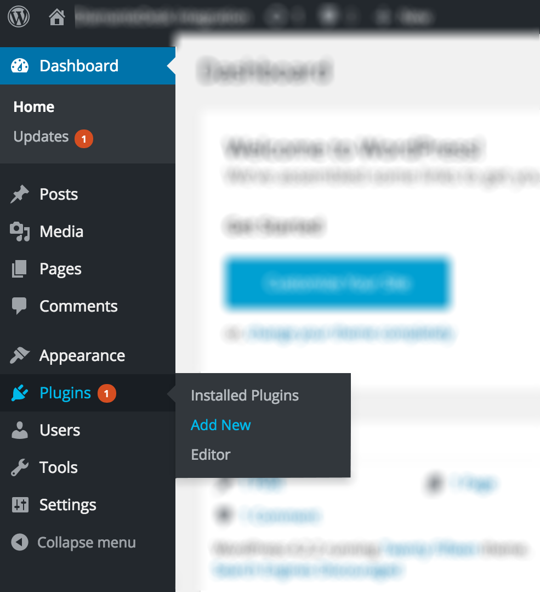
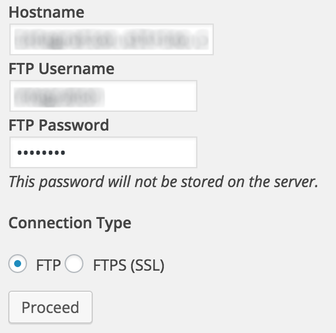
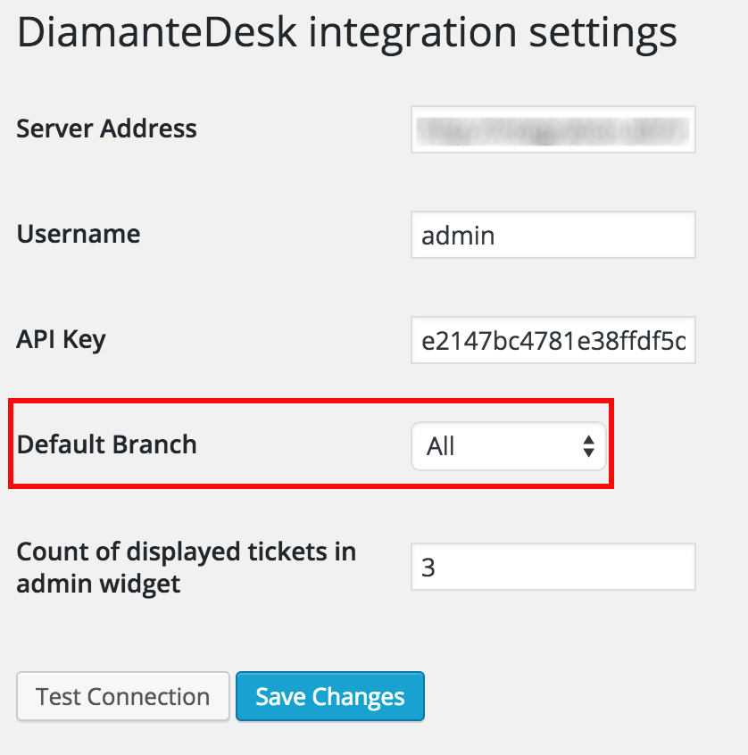

DiamanteDesk plugin allows adding support help desk to your blog or website. Any comments from the website may be converted into tickets and grouped into separate branches according to the topic or an account.
Installing DiamanteDesk Plugin for WordPress
- Log in the WordPress Admin Panel.
- On the navigation panel head over to Plugins > Add New.

Automatic installation
- Go to WordPress Plugin Directory.
- Enter DiamanteDesk in the Search Plugins field and press Enter.
- Click Install Now and activate the plugin.
Manual installation
Option 1 - Installation via FTP:
- Upload the addthis folder to the
/wp-content/plugins/ directory.
- Activate the plugin through the Plugins screen in your WordPress admin area.
Option 2 - Installation via archive:
- Download DiamanteDesk plugin for WordPress from Github.
- On the Add Plugin screen click Upload Plugin.
- Select the downloaded zip file from your computer.
- Click Install Now.
- To install the plugin, WordPress needs to access your web server. Enter your FTP credentials to proceed.
Note: If you do not remember your credentials, contact your web host.

5. Click Proceed. If the plugin has been successfully installed, you shall see the following message:
 6. Click Activate Plugin.
6. Click Activate Plugin.
Connecting DiamanteDesk to WordPress
After the plugin has been successfully installed, the DiamanteDesk menu item shall appear in the Wordpress admin menu. It shall be configured for the proper work of a help desk.
In order to do that, complete the following steps:
- Acquire API credentials from your CRM.
- Get back to WordPress Admin Panel.
- Select DiamanteDesk menu item from the WordPress admin menu. DiamanteDesk plugin settings screen opens.

- Provide the link to the server in the Server Address field.
- Enter the Username and Api Key from your CRM.
- Select the number of tickets which is going to be displayed in the admin widget.
- Click Test Connection to make sure that the connection with a server has been successfully made.
- If the credentials are correct and the connection between WordPress and DiamanteDesk has been successfully made, a new Default Branch field will be added to the DiamanteDesk configuration.

- Select a default branch from the drop-down list.
- Click Save Changes.